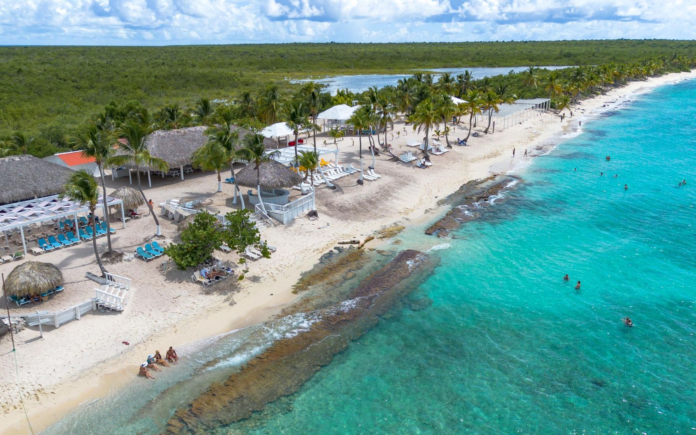
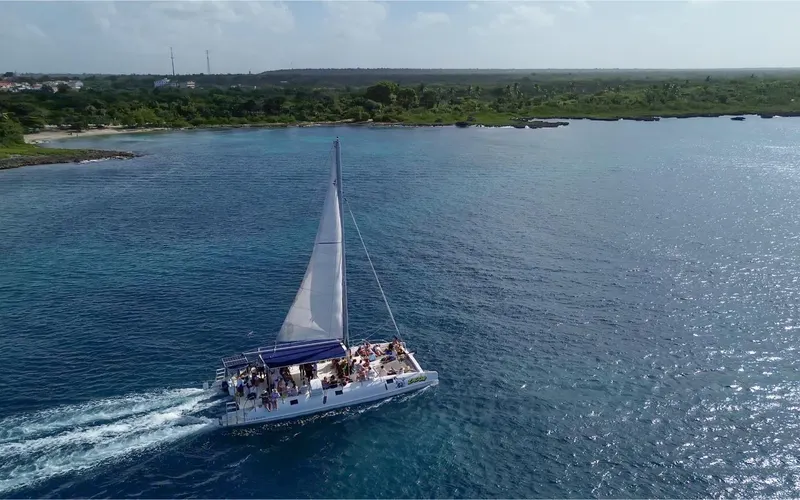
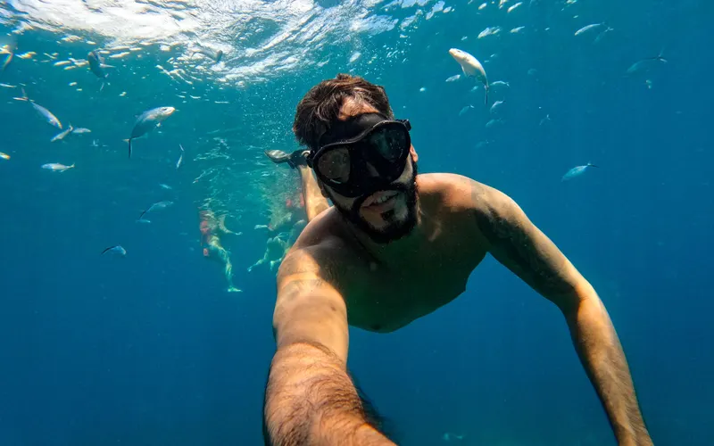
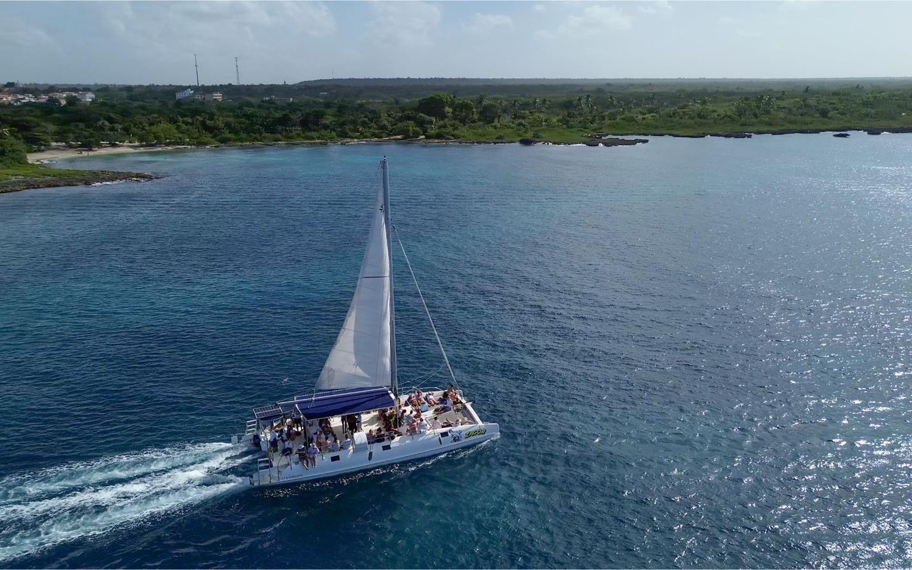
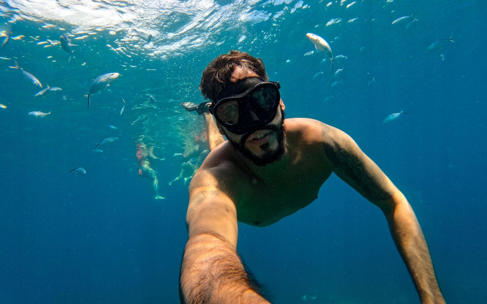
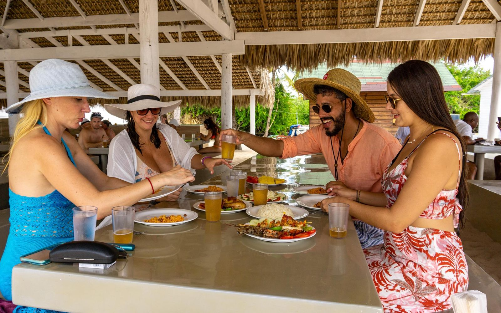
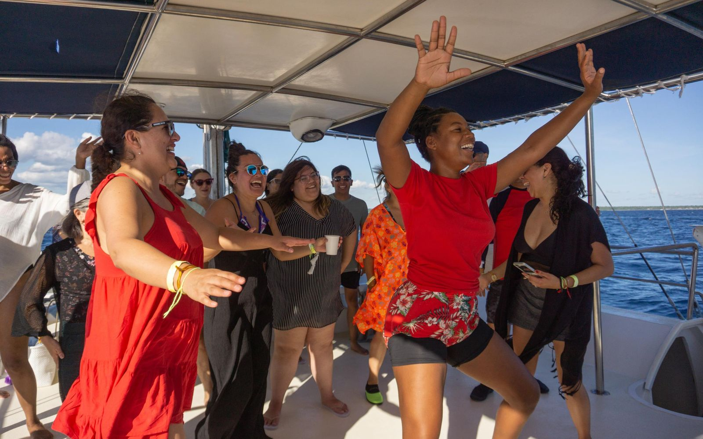

Barco · arrecife · almuerzo en la playa
Excursión a Isla Catalina desde Punta Cana
Una isla más tranquila frente a La Romana, con agua calmada y arrecife cerca de la playa.
5.0 en Google

Niños 5–8 $37.50
0–4 gratis · 9+ precio adulto
✓ Recogida en tu hotel incluida✓ Cancela gratis hasta 24 h
Elige tu fecha y mira tu total
Luego: tu hotel y tus datos de contacto. El cargo a tu tarjeta solo se hace en la página segura de Stripe.
Pregunta primero por WhatsApp¿Prefieres consultar antes? Confirmamos fecha y recogida por WhatsApp y te enviamos el link de pago de Stripe.
Cap Cana y Uvero Alto: $85 por adulto, mín. 4 · Nada que pagar en la recogida · WhatsApp en español
- Barco a CatalinaOpen bar a bordo
- Agua tranquila y arrecifeCerca de la orilla
- Almuerzo en la playaIncluido en el precio
- Recogida en tu hotel incluidaPunta Cana y Bávaro · Cap Cana y Uvero Alto $85
¿Vas mañana? Reserva esta noche y recibe tu hora de recogida por WhatsApp.
- Cancela gratis hasta 24 h antes, reembolso completo
- Pago en USD con tarjeta, pago seguro con Stripe
- Ticket por email apenas pagas
Equipo local en Punta Cana. Carlos, el dueño, responde por WhatsApp de día o de noche: WhatsApp +1 829 962 1705



Resumen
Un día de isla más tranquilo
Catalina es una isla pequeña frente a La Romana, con agua tranquila y clara y un arrecife cerca de la orilla. Te recogemos en tu hotel, vas en barco a la isla, te bañas y descansas en la playa, almuerzas y te llevamos de vuelta a tu hotel en la tarde.
- Día completoRecogida 6:20–8:10 AM
- Barco a la islaOpen bar a bordo
- Almuerzo en la playaIncluido en el precio
- Niños bienvenidos5–8 mitad de precio, 0–4 gratis
Itinerario
Cómo es el día
- 6:20–8:10AMRecogidaEn tu hotel. La hora exacta depende de tu hotel; mira la tabla de abajo. Te la confirmamos por WhatsApp el día antes.
- MañanaBarco a CatalinaSubes al barco hacia la isla, frente a La Romana. Open bar a bordo.
- Parada 1Arrecife y agua tranquilaAgua clara y tranquila con un arrecife cerca de la orilla, así pasas más tiempo en el agua.
- Parada 2Almuerzo en la playaAlmuerzo en la isla y tiempo libre en la arena.
- TardeRegresoBarco de vuelta y traslado a tu hotel.
Bueno saberlo
- ¿Catalina o Saona? Catalina es más tranquila, con arrecife cerca de la orilla. Saona es la postal famosa con la piscina natural.
- ¿Niños? 0–4 gratis, 5–8 mitad de precio, 9+ precio adulto. El agua suele estar tranquila.
- ¿Qué llevar? Traje de baño, toalla, protector solar biodegradable y algo de efectivo si quieres dar propina.
- ¿Costos extra? Ninguno. La propina es opcional; las bebidas premium e importadas no están incluidas.
Qué incluye
Un solo precio, sin sorpresas
Qué incluye
- Recogida y regreso al hotel
- Barco a la isla
- Almuerzo en la playa
- Open bar a bordo
No incluye
- Propinas (opcionales)
- Bebidas premium e importadas
Qué llevar
- Traje de baño y toalla
- Protector solar biodegradable
Bueno saber
- El bus espera 10 minutos en cada hotel.
Recogida
Horarios de recogida por zona
Horarios para Saona, Catalina y Santo Domingo. Tu hora exacta te la confirmamos por WhatsApp el día antes.
| Zona | Hoteles | Recogida |
|---|---|---|
| Uvero Alto ($85, mín. 4) | Zoetry, Sivory, Excellence, Sirenis, Breathless, Dreams Onyx, Live Aqua, Nickelodeon, Royalton Chic | 6:20 – 6:45 AM |
| Macao | Hard Rock, Dreams Macao | 6:45 – 6:50 AM |
| Bávaro norte | Riu, Occidental Caribe, Royalton, Majestic, Bahía Príncipe, Iberostar | 7:05 – 7:35 AM |
| Bávaro centro | Ocean Blue, Princess, Vik Arena Blanca, Palladium, Impressive, Dreams Royal Beach | 7:10 – 7:55 AM |
| Bávaro sur | Meliá, Lopesan (Costa Bávaro, Caoba Lagoon, Serenity Bay, Splash Cove), Barceló | 7:55 – 8:00 AM |
| Cabeza de Toro | Dreams Palm Beach, Be Live, Serenade, Catalonia, Sunscape Coco, Radisson | 7:30 – 8:10 AM |
| Punta Cana | Club Med, Four Points, Westin, Tortuga Bay | 7:45 – 8:00 AM |
| Cap Cana ($85, mín. 4) | Sanctuary, Hyatt Ziva & Zilara, Secrets, Eden Roc, TRS, Ancora | 7:30 AM |
| Bayahibe | Dreams, Viva, Iberostar Hacienda, Hilton La Romana, Sunscape | 9:10 AM |
| La Romana | Casa de Campo, Bahía La Romana, La Estancia | 8:30 – 9:45 AM |
Reseñas
Lo que dicen los viajeros
5.0en Google
Me encantó lo bien organizados que son. Sin esperas largas, todo explicado claro y siempre pendientes de que la pasáramos bien. Repetiría seguro.Estarling D.Reseña de Google
¡Excelente agencia de excursiones! Atención disponible las 24 horas, muy buena valoración y precios accesibles. Todo bien organizado, ideal para disfrutar Punta Cana sin preocupaciones. ¡La recomiendo!Pedro P.Reseña de Google

Una nota del dueño
“Soy Carlos, el dueño de Excursions Punta Cana. Te respondemos por WhatsApp al instante, a cualquier hora. Y si algo sale mal el día de tu tour, lo resuelvo yo personalmente, no un call center.”
Carlos · Dueño, Excursions Punta CanaPreguntas y políticas
Guías: precio de Isla Catalina por zona · cómo reservar y pagar desde tu país · ¿Saona o Catalina? · excursiones con niños: precio de cada tour
¿Vale la pena Isla Catalina?
Sí, si quieres un día más tranquilo que Saona. Catalina es una isla pequeña frente a La Romana, con agua calmada y clara y un arrecife cerca de la playa, así que pasas más tiempo en el agua y menos entre multitudes.
¿Cuánto cuesta el tour a Catalina?
$75 por adulto y $37.50 por niño de 5 a 8 años. De 0 a 4 años van gratis y desde los 9 pagan precio de adulto. El precio incluye recogida en el hotel, el barco a la isla, almuerzo en la playa y open bar a bordo.
¿Catalina o Saona?
Catalina es más tranquila, con agua calmada y arrecife justo frente a la playa. Saona es la postal clásica del Caribe, con la piscina natural, catamarán de ida y lancha de vuelta. Si solo puedes hacer una y quieres el día famoso, elige Saona; si prefieres calma y menos gente, elige Catalina.
¿Qué incluye?
Recogida y regreso al hotel, el barco a la isla, almuerzo en la playa y open bar a bordo. No incluye propinas ni bebidas premium o importadas.
¿A qué hora me recogen en el hotel?
Depende de tu zona; la tabla de recogida de esta página tiene todas las zonas. Te confirmamos la hora exacta por WhatsApp el día antes. El bus espera 10 minutos en cada hotel.
No me hospedo en un hotel. ¿Me pueden recoger?
Sí. Si estás en un Airbnb o una villa, te recogemos en la entrada o lobby del hotel más cercano en nuestra ruta, o nos encuentras en nuestro punto de encuentro. Lo acordamos contigo antes del tour.
¿Qué debo llevar?
Traje de baño, toalla, protector solar biodegradable y algo de efectivo si quieres dar propina.
¿Es bueno para niños?
Sí. Los niños de 5 a 8 pagan la mitad, de 0 a 4 van gratis y desde los 9 pagan como adulto, y el agua en Catalina suele estar calmada.
¿Cómo pago? ¿Es seguro?
Con tarjeta, en una página de pago segura de Stripe. Stripe te envía el recibo al instante y tu ticket llega por correo enseguida. No cobramos efectivo en la recogida.
¿Puedo cancelar o cambiar la fecha?
Cancela hasta 24 horas antes y te devolvemos todo. También puedes cambiar la fecha una vez, gratis, hasta 24 horas antes. Con menos de 24 horas, no hay reembolso.
¿Y si llueve?
La lluvia suave no detiene el tour. Si el puerto cierra por seguridad y el tour se cancela de nuestro lado, eliges otra fecha o el reembolso completo.
¿Cuánto cuesta desde Cap Cana o Uvero Alto?
$85 por adulto y $42.50 por niño de 5 a 8 años, con un mínimo de 4 personas.


¿Listo para Catalina?
Elige la fecha, paga seguro y tu hora de recogida te llega por WhatsApp. Cancela gratis hasta 24 horas antes.